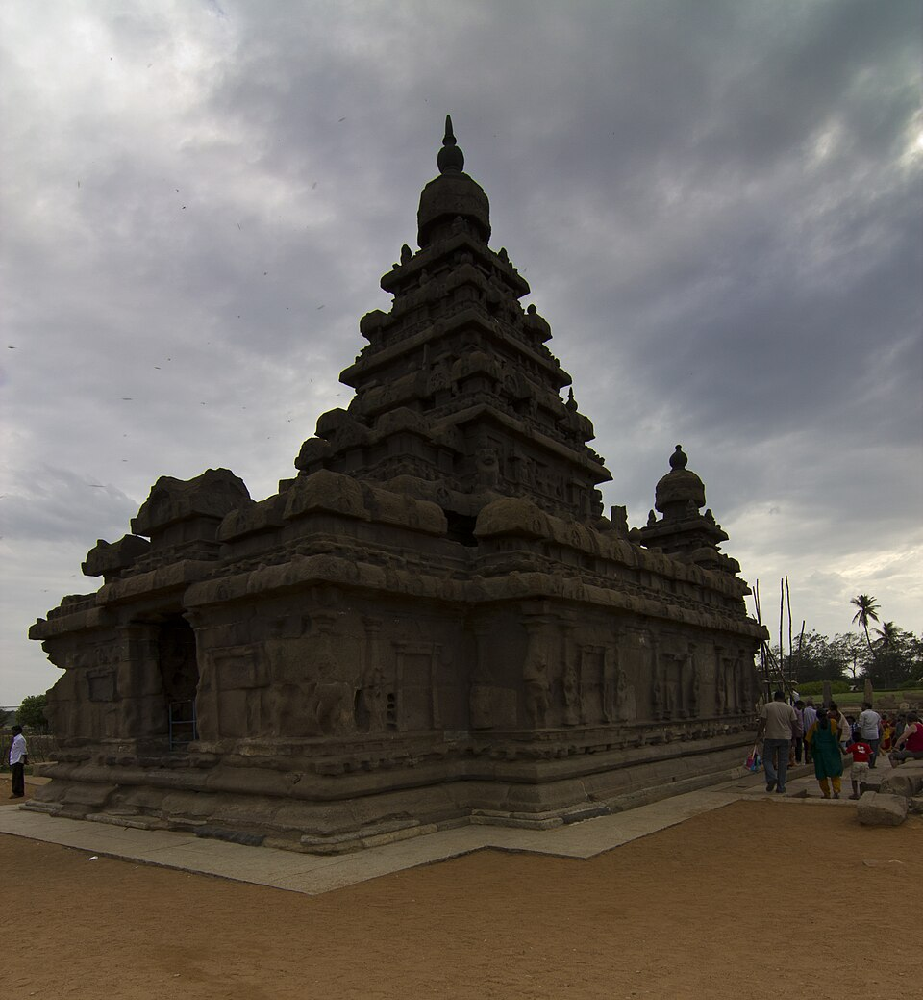

1. The Sources for Harsha's Reign
Harsha is the best-documented Indian ruler between the Guptas and the Sultanate because four independent classes of evidence survive and cross-check.
| Source | Author / type | Value | Bias |
|---|---|---|---|
| Harshacharita | Banabhatta, court poet; Sanskrit ornate prose (akhyayika), 8 ucchvasas | The first historical biography in Sanskrit; ancestry, Rajyavardhana's murder, the accession | Panegyric; breaks off early |
| Si-yu-ki | Hiuen Tsang / Xuanzang, in India c. 630–644 CE | Roads, cities, taxation, punishments, Buddhism, the fullest account of Nalanda | A monk's eye |
| Banskhera & Madhuban copper plates | Harsha's own land-grant charters | Titulature, officers, the machinery of revenue-free grants; Banskhera carries Harsha's signature | Most reliable |
| Aihole inscription | Ravikirti, poet of Pulakeshin II; Saka 556 (634–35 CE), Meguti temple | The hostile record — Pulakeshin II checked Harsha | Rival's prashasti; exaggerates Chalukya success |
The check on Harsha is accepted because it comes from an enemy's record — no king's poet invents a defeat for his patron.
2. From Thanesar to Kannauj — Harsha's Rise
- Dynasty: the Pushyabhutis (Vardhanas) of Thanesar (Sthanvishvara, Haryana), ex-feudatories who rose as Gupta power dissolved; Prabhakaravardhana first took imperial titles.
- The double catastrophe: Harsha's sister Rajyashri married Grahavarman, Maukhari king of Kannauj. Devagupta of Malwa killed Grahavarman; Harsha's brother Rajyavardhana avenged him but was treacherously killed by Shashanka of Gauda (Bengal).
- Accession, 606 CE — the start of the Harsha era. He rescued Rajyashri, then took the vacant Maukhari throne.
- Shift of capital to Kannauj (Kanyakubja) — the period's most consequential geographical fact: for five centuries afterwards Kannauj, not Pataliputra, is the prize northern dynasties fight over. Harsha took the title Maharajadhiraja, and Chinese sources call him Shiladitya, king of Magadha.
3. Campaigns and the Narmada Check
At its height Harsha's authority ran from Punjab across the Ganga plain to Bengal, with Malwa, Gujarat and Odisha under influence and Bhaskaravarman of Kamarupa (Assam) as ally — but it was a system of subordinated kings with a hard southern limit.
| Theatre | Outcome | Significance |
|---|---|---|
| Shashanka of Gauda | Bengal absorbed | Avenged Rajyavardhana; opened Bengal |
| Valabhi (Gujarat) | Dhruvasena II defeated, then made son-in-law and feudatory | Subordination by marriage, not annexation |
| Narmada v. Pulakeshin II, c. 618–634 CE | Harsha checked and turned back | Narmada fixed as the boundary; southern ambition ended |
Ravikirti puts it in a pun — Harsha, "whose harsha (joy) melted away", lost his elephant force; Xuanzang independently notes that the ruler of Maharashtra was the one prince Harsha could not subdue. The lasting result is a north–Deccan–far-south division that no power reunites until the Delhi Sultanate.
4. Administration, Land Grants and Incipient Feudalism
- Officers in Banabhatta: Avanti (war and peace), Simhananda (commander-in-chief), Skandagupta (elephant corps), Kuntala (cavalry), the kinsman Bhandi. Territory ran in bhuktis (provinces) under an uparika, vishayas (districts) under a vishayapati, then villages.
- Revenue: Xuanzang records a light land tax, customarily one-sixth, and state income divided four ways — state expenses, salaries, rewards to scholars, religious gifts.
- The critical shift: officers and priests were increasingly paid by assignments of revenue-free land rather than cash — exactly what the Banskhera and Madhuban plates record.
- Why it matters: a grantee who collects his own revenue and keeps his own retainers is a feudatory in embryo. Harsha's reign is treated as the visible start of Indian feudalism — thinning coinage, decaying towns, self-sufficient villages.
- Order: Xuanzang praises mild ordinary law but records mutilation for grave offences and ordeal by water, fire, weighing and poison — and says the roads were unsafe, since he was robbed himself.
5. Religion — the Kannauj and Prayag Assemblies
Harsha began as a Shaiva and moved towards Mahayana Buddhism without abandoning Brahmanical patronage. The Kannauj Assembly (c. 643 CE) was a doctrinal convocation in honour of Xuanzang, attended by subordinate kings including Bhaskaravarman and by thousands of monks and Brahmanas; Xuanzang reports disturbances and an attempt on Harsha's life, so its Mahayana bias was clearly resented. The Prayag Assembly (Mahamoksha Parishad), at the Ganga–Yamuna confluence every five years, distributed the accumulated treasury to Buddhists, Brahmanas, Jainas and the poor, Harsha reportedly giving away even his garments; Xuanzang attended the sixth. Together they show a plural policy, not a Buddhist one.
Ratnavali and Priyadarshika are natikas — light court romances of the Udayana cycle.
Nagananda is the odd one out — a Buddhist-themed play on the self-sacrifice of Jimutavahana, opening with a benediction to the Buddha.
"Two romances and one renunciation." If asked which play is Buddhist, answer Nagananda.
6. Why the Empire Dissolved at His Death
- Harsha died in 647 CE without an heir and the empire vanished at once, for structural reasons. It rested on personal allegiance: defeated kings were reinstated as feudatories bound to Harsha himself, not to an institution.
- There was no cash-paid standing bureaucracy, so land-assigned officers had no stake in a successor; and Kannauj carried no dynastic legitimacy of its own.
- A minister, Arjuna (Arunashva), seized power and attacked the mission of Wang Xuance, who escaped, returned with Tibetan and Nepalese troops and carried Arjuna off to China.
- The vacuum led straight to the tripartite struggle for Kannauj among Palas, Pratiharas and Rashtrakutas.
7. Xuanzang's Testimony

| Theme | Report | Historical reading |
|---|---|---|
| Nalanda | Vast residential university, free board and lodging, admission by oral examination at the gate | Funded by village endowments, not fees |
| Buddhism | Strong in Magadha and the north-west; deserted monasteries elsewhere | Becoming monastic and elite, hence fragile |
| Cities | Pataliputra and Vaishali largely ruined; Kannauj prosperous | Urban decay in the middle Ganga; weight moves west |
| Roads and law | Bandits active; ordeals used; untouchables kept outside settlements | Harsha's peace was shallow; stratification hardening |
8. The Chalukyas of Badami (Vatapi), c. 543–757 CE
- Pulakeshin I founded the line, fortified Badami (Vatapi) in Karnataka and performed the ashvamedha — a claim to imperial rank.
- Pulakeshin II (c. 610–642 CE) is the peak: he checked Harsha on the Narmada, subdued the Kadambas and Gangas, beat the Pallava Mahendravarman I, planted the Vengi branch that became the Eastern Chalukyas, and exchanged embassies with Khusrau II of Persia.
- The reckoning: the Pallava Narasimhavarman I sacked Badami in 642 CE and Pulakeshin II died in the disaster; Vikramaditya I recovered the capital a decade later. The Rashtrakuta Dantidurga overthrew the last Badami Chalukya, Kirtivarman II, around 753 CE.
| Site | Character | Exam hook |
|---|---|---|
| Badami | Rock-cut sandstone caves — three Brahmanical, one Jaina | Caves, not structural |
| Aihole | Around 125 temples, the "cradle of Indian temple architecture"; Lad Khan, Durga and Meguti temples | The Aihole inscription of Ravikirti is on the Meguti Jain temple |
| Pattadakal | Structural temples in both Nagara and Dravida idioms; Virupaksha temple built by queen Lokamahadevi for Vikramaditya II's victory over the Pallavas | UNESCO 1987 — the fusion of styles |
9. The Pallavas of Kanchipuram, c. 4th–9th centuries CE
- Based in Tondaimandalam, northern Tamil Nadu, with Kanchipuram as capital, temple city and centre of Sanskrit learning; Simhavishnu opens the imperial phase.
- Mahendravarman I (c. 600–630 CE), titled Vichitrachitta, wrote the farce Mattavilasa Prahasana, a satire on drunken Kapalika and Buddhist mendicants in Kanchi. His Mandagapattu inscription boasts of a temple made "without brick, timber, metal or mortar" — the arrival of rock-cut cave temples in the Tamil country. Tradition has him converted from Jainism to Shaivism by the Nayanar saint Appar.
- Narasimhavarman I "Mamalla" (c. 630–668 CE) took Badami in 642 CE and the title Vatapikonda, and sent naval expeditions to Sri Lanka. Mahabalipuram is named after him.
- Narasimhavarman II "Rajasimha" built the Shore Temple and the Kailasanatha temple at Kanchipuram — the move to structural stone. The last significant Pallava, Aparajita, fell to the Chola Aditya I late in the 9th century.

10. The Chalukya–Pallava Seesaw
Not one war but a two-century rivalry over the Krishna–Tungabhadra country, in which neither side destroyed the other. The alternating capital-sackings are the most examinable Deccan sequence.
| Round | Chalukya | Pallava | Result |
|---|---|---|---|
| First | Pulakeshin II | Mahendravarman I | Chalukya victory; Pallava territory lost |
| Second | Pulakeshin II | Narasimhavarman I | Pallava victory — Badami sacked, 642 CE |
| Third | Vikramaditya I | Later Pallavas | Badami recovered; thrust towards Kanchi |
| Fourth | Vikramaditya II | Nandivarman II | Chalukyas enter Kanchipuram; Virupaksha temple commemorates it |
11. From Rock-cut to Structural — the Birth of the Dravida Temple
| Phase | Ruler | Form | Example |
|---|---|---|---|
| Mahendra | Mahendravarman I | Pillared cave temples cut into rock | Mandagapattu and other cave shrines |
| Mamalla | Narasimhavarman I | Monolithic rathas carved from single boulders; open-air bas-reliefs | Pancha Rathas; "Descent of the Ganga / Arjuna's Penance" |
| Rajasimha | Narasimhavarman II | Structural temples of assembled stone with a developed vimana | Shore Temple; Kailasanatha |
| Nandivarman | Nandivarman II | Smaller structural temples; taller vimana | Vaikuntha Perumal, Kanchipuram |
The storeyed vimana is a Pallava invention the Cholas later scale up rather than reinvent. Pattadakal, by contrast, answers "synthesis of styles".
12. The Sangam Age — the Tradition and the Caution
Tamil tradition, preserved in a late commentary on the Iraiyanar Akapporul, records three literary academies (Sangams) under Pandya patronage. The exam-safe formulation: the three-Sangam scheme is a tradition, and only the corpus attributed to the third Sangam survives.
| Sangam | Seat | Survivals |
|---|---|---|
| First | The old (submerged) Madurai; Agastya associated with it | None |
| Second | Kapatapuram | Only the Tolkappiyam |
| Third | Madurai, under the Pandyas | The extant corpus — Ettuthogai and Pattuppattu |
The poems are secular heroic and love poetry, not scripture, which makes them an unusually direct window into early Tamil society. The examination bracket is c. 300 BCE – 300 CE, with the epics later.
13. The Sangam Corpus
| Work | Content | Author / note |
|---|---|---|
| Tolkappiyam | Three books — Ezhuttatikaram, Solladikaram, Poruladikaram | Tolkappiyar; the earliest extant Tamil grammar, its third book also a source for society |
| Ettuthogai | The Eight Anthologies — Ahananuru, Purananuru, Narrinai, Kurunthogai, Aingurunuru, Pathitrupathu, Paripadal, Kalithogai | Purananuru for kings and war, Ahananuru for love |
| Pattuppattu | The Ten Idylls — longer poems, including Pattinappalai and Maduraikkanchi | Pattinappalai describes the Chola port of Puhar and praises Karikala |
| Silappadikaram | Twin epic — Kannagi destroys Madurai after her husband Kovalan is wrongly executed | Ilango Adigal, traditionally a Chera prince; source of the Pattini cult |
| Manimekalai | Sequel — Manimekalai, daughter of Kovalan and Madhavi, becomes a Buddhist nun | Sattanar; strongly Buddhist |
| Thirukkural | 1,330 couplets in three books — Aram, Porul, Inbam | Thiruvalluvar; grouped with the Pathinenkilkanakku (Eighteen Minor Works), later than the main corpus |
The examinable distinction: Ettuthogai and Pattuppattu are the corpus proper; Silappadikaram and Manimekalai are the later twin epics; Thirukkural is didactic. A question calling Silappadikaram "a Sangam anthology" is testing this slip.
Silappadikaram → Ilango Adigal → the Pattini cult.
Manimekalai → Sattanar → Buddhist.
The two S-words never go together: Silappadikaram is NOT by Sattanar.
14. The Three Crowned Kings (Muvendar)
| Kingdom | Region | Capital | Emblem | Chief port | Greatest king |
|---|---|---|---|---|---|
| Chera | Kerala and Kongu | Vanji (Karur) | Bow | Muziris; also Tondi | Senguttuvan, the "Red Chera" |
| Chola | Kaveri delta, northern Tamil Nadu | Uraiyur; Puhar on the coast | Tiger | Puhar (Kaveripattinam) | Karikala |
| Pandya | Southern Tamil Nadu | Madurai | Fish | Korkai (pearls) | Nedunjeliyan of Talaiyalanganam |
- Karikala Chola broke a Chera–Pandya confederacy at Venni, embanked the Kaveri, and is credited with the Kallanai (Grand Anicut) — a diversion dam still in use, the standard answer for the oldest functioning irrigation structure.
- Senguttuvan is said to have marched north and brought Himalayan stone for the image of Kannagi, founding the Pattini cult — narrated in the Silappadikaram, so tradition rather than documented campaign.
- Below them stood the velir chieftains, whose gift-giving the bardic poems praise — hence so much Sangam verse is a poetry of patronage.
15. The Five Tinai — Landscape as Literary Grammar
Sangam poetry divides into aham (inner world, love) and puram (outer world — war, kings, death). Aham poetry uses a scheme found nowhere else in Indian literature: each landscape (tinai) is fixed to a phase of love, a deity and an economy.
| Tinai | Landscape | Love phase | Deity | Economy |
|---|---|---|---|---|
| Kurinji | Hills and forest | Union of lovers | Murugan (Seyon) | Hunting, gathering, honey |
| Mullai | Pastoral woodland | Patient waiting | Mayon (Vishnu) | Cattle-keeping |
| Marutham | Irrigated plains | Lovers' quarrel | Ventan (Indra) | Wet rice, the richest zone |
| Neytal | Seacoast | Pining in separation | Varuna | Fishing, salt, pearls |
| Palai | Parched wasteland | Elopement, hardship | Korravai | Cattle raiding |
The scheme is at once a literary convention and an ecological map: Marutham supported the strongest states, Palai communities lived by raiding — which is why cattle-lifting is a standard puram theme.
Kurinji = hill flower → mountains. Mullai = jasmine → forest. Marutham = riverside tree → farmland. Neytal = water lily (neer = water) → coast. Palai = parched tree → desert.
16. Sangam Society, Economy and the Roman Trade
- Social groups: the Tolkappiyam names arasar (ruling), anthanar (priestly), vanigar (trading) and vellalar (cultivating). Varna in the developed northern sense had not been imposed, though ranking existed.
- Women: women poets appear in the anthologies, Avvaiyar best known; but widowhood was harsh and the poems refer to widow self-immolation, so "high status" must be stated carefully.
- Hero stones (nadukal) were raised for warriors killed in raids and battles. Murugan was pre-eminent, and the Tamil-Brahmi cave inscriptions are largely donations to Jaina ascetics.
- Rome: the Periplus of the Erythraean Sea (1st century CE), Pliny and Ptolemy describe the traffic, Pliny complaining of the drain of Roman gold. Coin hoards and the excavated station at Arikamedu (Poduke) near Puducherry confirm it.
| Port | Coast / kingdom | Known for |
|---|---|---|
| Muziris | Chera, Malabar | The pepper emporium, named in the Periplus and in Tamil poems |
| Puhar / Kaveripattinam | Chola, Coromandel | Warehouses, customs and a foreign quarter — described in Pattinappalai |
| Korkai | Pandya, Gulf of Mannar | Pearl fisheries |
Exports: pepper and spices, pearls, gems, muslin, ivory. Imports: wine, glassware and above all gold coin. Yavanas appear in the poems as merchants and hired bodyguards.
17. The End of the Sangam Age — the Kalabhra Interregnum
From about the mid-3rd century CE the three kingdoms fade from the record, traditionally because of the Kalabhras, obscure invaders who displaced the Chera, Chola and Pandya lines and are remembered as an evil age — chiefly because they favoured Buddhism and Jainism and withdrew brahmadeya grants. The 3rd to 6th centuries CE are the Kalabhra interregnum, dark mainly because sources are scarce and hostile. It ends when the Pandya Kadungon and the Pallava Simhavishnu break Kalabhra power in the later 6th century.